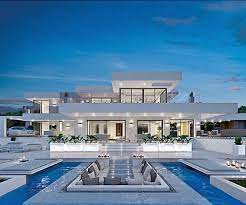
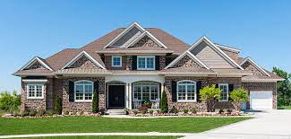

A mansion is a large dwelling house. The word itself derives through Old French from the Latin word mansio "dwelling", an abstract noun derived from the verb manere "to dwell". The English word manse originally defined a property large enough for the parish priest to maintain himself, but a mansion is no longer self-sustaining in this way (compare a Roman or medieval villa). Manor comes from the same root—territorial holdings granted to a lord who would "remain" there. Renaissance villas such as Villa Rotonda near Vicenza were an inspiration for many later mansions, especially during the industrialisation. Following the fall of Rome, the practice of building unfortified villas ceased. Today, the oldest inhabited mansions around the world usually began their existence as fortified houses in the Middle Ages. As social conditions slowly changed and stabilised fortifications were able to be reduced, and over the centuries gave way to comfort. It became fashionable and possible for homes to be beautiful rather than grim and forbidding allowing for the development of the modern mansion. In British English, a mansion block refers to a block of flats or apartments designed for the appearance of grandeur.[1][2] In many parts of Asia, including Hong Kong and Japan, the word mansion also refers to a block of apartments. In modern Japan, a "manshon" (Japanese: マンション), stemming from the English word "mansion", is used to refer to a multi-unit apartment complex or condominium
| Suburban | Modern |
|---|---|
|  |  |
This video further explains what a mansion is